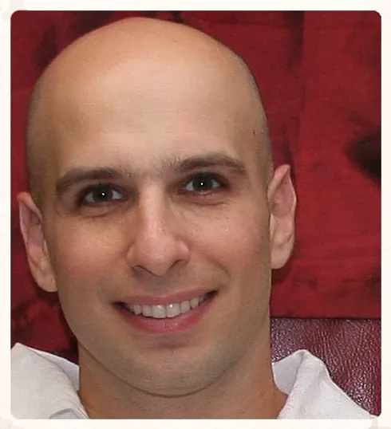

Kfir Y. Levy is an Associate Professor of Electrical and Computer Engineering at the Technion. Specializing in Machine Learning, AI, and Optimization, his research is dedicated to building universal methods for complex and diverse learning scenarios. He has been recognized for his contributions with the Alon, ETH Zurich, and Irwin & Joan Jacobs fellowships.
Short Abstract: The canonical algorithm for training learning models, SGD, diverges significantly from its noiseless counterpart (GD) by requiring meticulous learning rate tuning and continuous validation-set monitoring to estimate generalization error. In this talk, we present a novel optimization method that achieves the optimal rates of SGD while operating with the stability and simplicity of GD. Our algorithm relies on a unique gradient estimate that combines two recent momentum-related mechanisms, allowing it to utilize a fixed learning rate without needing a validation set. Crucially, the benefits of this approach extend beyond practical tuning to unlock rigorous theoretical improvements in distributed environments. We will highlight this by demonstrating how our double momentum variant achieves tighter theoretical bounds for Differentially Private and Byzantine Federated Learning, with further discussion on Personalized Federated Learning if time permits.